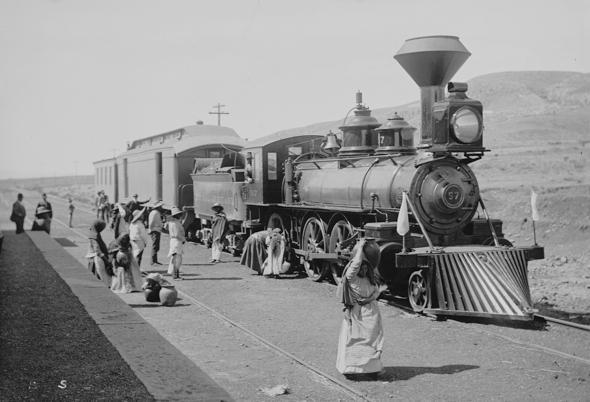
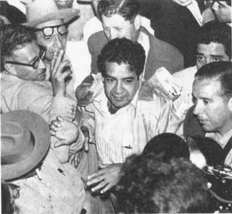

Desarrollo del conflicto
Junio 1958: paros escalonados para exigir aumento salarial de 350 pesos mensuales. Agosto 1958: los trabajadores planteaban también la exigencia de democracia sindical. Marzo 1959: huelgas nacionales que paralizan buena parte del sistema ferroviario y la economía nacional.
Respuesta del Estado
Despidos, los líderes fueron arrestados y enviados a la prisión de Lecumberri, mayor control sobre el sindicato eliminando toda disidencia interna.

legado del Movimiento
demostro que los trabajadores podian organizarse a nivel nacional, expuso el caracter autoritario del estado y se convirtio en ejemplo para otros sectores como maestros, medicos y estudiantes